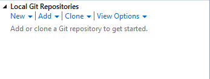
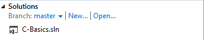
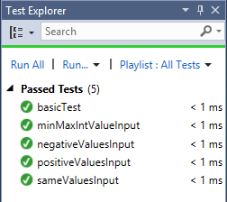

Project setup steps:
- Install Visual Studio Express 2013 for Windows Desktop.
- Open visual studio after installation is successful.
- Select FILE --> Open from Source Control. This will open Team Explorer - Connect window on right side.
- You will see Local Git Repositories option as shown below:

- Now click on Clone dropdown. Enter git clone URL (for E.g: https://github.com/mission-rnd/C-Basics.git) in first box and local folder location where you want to clone this repository in second box.
- A prompt window opens to enter bitbucket username and password.
- Now double click on cloned git repository and then on C-Basics.sln file as shown below:


- Now select VIEW --> Solution Explorer to open solution explorer window.
- You will see spec and src projects. spec project contains all test files and src project contains all source files.
- Now run tests from TEST --> Run --> All Tests. You will see test results on left pane as shown below:

- If you want to debug any test, keep a breakpoint in the file you want to debug and run test from TEST --> Debug --> All Tests (you can use selected tests option here if any tests are selected in left pane Test Explorer window).